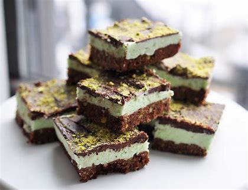
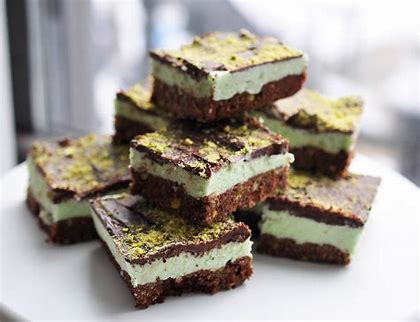
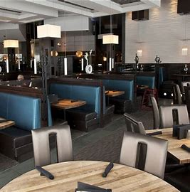
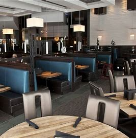

World Class Chef-driven Hydra Estiatorio Mediterranean & Bar is a Greek seafood restaurant with a vibrant and engaging 40-foot cocktail bar. It is named after the lovely gourmet Greek island in the Aegean Sea.
Located in the atrium of the Exchange Tower, Hydra combines traditional cooking methods with Greek ingredients to create high-quality Mediterranean dishes like grilled octopus that is incredibly tender and garnished with lemon juice and olive oil, as well as lamb chops that are served hot off the grill with hints of oregano and garlic.
You can travel to Greece's sun-kissed hills and turquoise waters by taking the Hydra Estiatorio Mediterranean & Bar. The elegant atmosphere of this glass-enclosed area is suitable for enjoying both during the day and at night, and it features a wide range of seating options, making it perfect for events of any size.
Hydra Estiatorio Mediterranean & Bar, which has a private room for up to thirty people and full restaurant buy-outs for up to 150 people, is the ideal venue for small gatherings. It has a soaring 60-foot lobby atrium, a sophisticated, award-winning wine programme with bottles from Greece and around the world, and it serves these beverages alongside refreshing handcrafted cocktails.
Visit Hydra Estiatorio Mediterranean & Bar, conveniently housed within the EXchange Hotel Vancouver in the centre of the city, to stimulate your senses.


 



 
